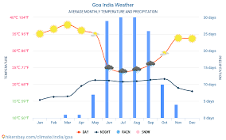

About Goa Climate
Goa has a tropical monsoon climate, characterized by warm temperatures and high humidity throughout the year.
The climate is influenced by the Arabian Sea and the Western Ghats mountain range.
Goa experiences three main seasons: summer, monsoon, and winter.
The monsoon season brings heavy rainfall, which is vital for the region's agriculture and water resources.
Tourism in Goa is also influenced by the climate, with peak tourist seasons during the cooler and drier months.